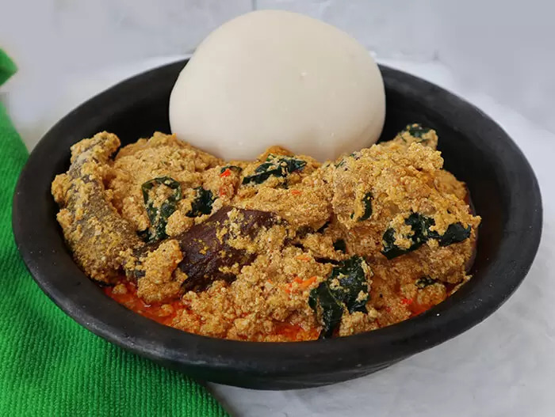

Egusi Soup
--> Return to Home

Description
Egusi soup is unarguably the most popular Nigerian soup. This is how to make egusi soup with lumps (the style you see and enjoy when you visit top-tier restaurants or hotels)
Ingredients
- 1kg ir 2.2lb beef
- 4 cups of egusi (melon)
- 1lb or 500g roasted fish
- 1/2 cup of ground crayfish
- A handful of sliced ugu (fluted pumpkin) leaves
- 2 seasoning cubes
- Salt to taste
- Pepper to taste (scotch bonnet)
- 1 medium-sized stockfish head (okporoko)
- 20g dawadawa or opkei (local ingredients)
Steps
- Gather all ingredients
- Grind the 4 cups of egusi with a dry blender or hand-grinding machine and set them aside in a bowl. Add about 1 cup of water to it and stir to make a very thick paste
- Parboil the meat with 2 seasoning cubes, 1 teaspoon of salt and 1/2 cup of sliced onions. Cook until the meat is tender and the sotck is about to dry
- Pour hot water over the stockfish in a bowl and set aside. Also remove the center bone from the roasted fishes, wash and set aside too
- Set your cooking pot on fire and add 300ml of palm oil (red oil), allow to heat for a minute but don't allow to bleach
- Add the egusi paste and keep stirring for the next 8 minutes to form seed-like crumbs
- Add the already cooked meat & stock into the pot and stir
- Add the washed dry fish, stockfish, ground crayfish, a seasoning cube, ground scotch bonnet pepper, and allow to boil for 10 minutes
- Add one spoon of ground dawadawa and a taste for salt and pepper. Stir occasionally
- Add a handful of sliced utazi leaves. Allow to simmer on low heat for 2 minutes and stir occasionally
- Turn off the fire. Serve while hot
That's it! You've made a very delicious egusi soup.
--> Return to Home